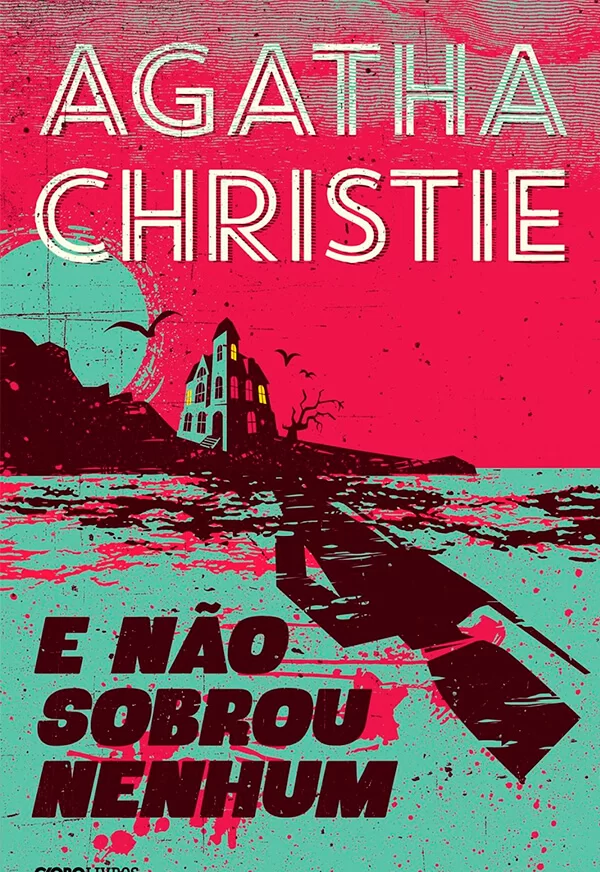

E não sobrou nenhum

Uma ilha misteriosa, um poema infantil, dez soldadinhos de porcelana e muito suspense são os ingredientes com que Agatha Christie constrói seu romance mais importante. Na ilha do Soldado, antiga propriedade de um milionário norte-americano, dez pessoas sem nenhuma ligação aparente são confrontadas por uma voz misteriosa com fatos marcantes de seus passados.
Convidados pelo misterioso mr. Owen, nenhum dos presentes tem muita certeza de por que estão ali, a despeito de conjecturas pouco convincentes que os leva a crer que passariam um agradável período de descanso em mordomia. Entretanto, já na primeira noite, o mistério e o suspense se abatem sobre eles e, num instante, todos são suspeitos, todos são vítimas e todos são culpados.
É neste clima de tensão e desconforto que as mortes inexplicáveis começam e, sem comunicação com o continente devido a uma forte tempestade, a estadia transforma-se em um pesadelo. Todos se perguntam: quem é o misterioso anfitrião, mr. Owen? Existe mais alguém na ilha? O assassino pode ser um dos convidados? Que mente ardilosa teria preparado um crime tão complexo? E, sobretudo, por quê?
São essas e outras perguntas que o leitor será desafiado a resolver neste fabuloso romance de Agatha Christie, que envolve os espíritos mais perspicazes num complexo emaranhado de situações, lembranças e acusações na busca deste sagaz assassino. Medo, confinamento e angústia: que o leitor descubra por si mesmo porque E não sobrou nenhum foi eleito o melhor romance policial de todos os tempos.
Clique para ser redirecionado para o link de Download
Disponível apenas em forma de resumo!